Tank stats
The Best Performing Tanks
Highest Relative WR
The graph shows the tanks with the highest Relative WR. That is the average of players' WR in a tank compared to their average WR at the tier (in all same tier tanks). Relative WR is a measure of the performance/strength of the tank.
- All the statistics are about battles fought during the update 6.8 only.
- The impact of “Stock-grind battles” is reduced based on tier-specific requirement for total battles at the end of the update. Only players with more than 0-152 (depending on the tier) battles in a tank in the end of the update are included to eliminate the impact of the first battles in the tank (with sub-100% crew / modules).
- The players need to have 10-20 battles in a tank and 20-40 battles at the tier during the update.
- Average WR is the players’s average WR in the tank
- Player WR at Tier is the average WR of the players of the tank at the tier. Since different tiers have different difficulty, it is more meaningful to compare players' performance in the same tier tanks.
- Only tanks with more than 400 players are listed. This may filter out few upcoming tanks that are being tested.
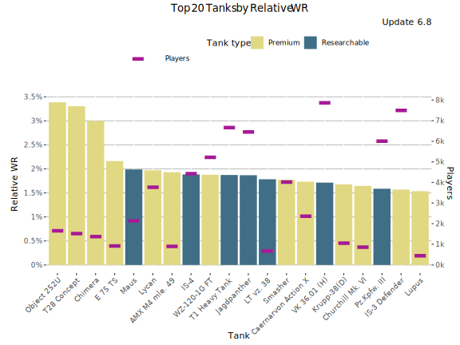
Highest Relative WR - Table
| Tank | Relative WR | Average WR | Player WR at Tier | Players | Battles/Player | Tank type |
|---|---|---|---|---|---|---|
| Object 252U | 3.41% | 58.9% | 55.5% | 1 643 | 88 | Premium |
| T28 Concept | 3.36% | 55.9% | 52.5% | 1 484 | 77 | Premium |
| Chimera | 3% | 59.4% | 56.4% | 1 376 | 111 | Premium |
| E 75 TS | 2.14% | 56.4% | 54.3% | 924 | 57 | Premium |
| Maus | 1.99% | 54.3% | 52.4% | 2 146 | 110 | Researchable |
| Lycan | 1.97% | 55.1% | 53.1% | 3 637 | 73 | Premium |
| AMX M4 mle. 49 | 1.94% | 57.7% | 55.8% | 906 | 71 | Premium |
| IS-4 | 1.9% | 53.1% | 51.2% | 4 406 | 120 | Researchable |
| Jagdpanther | 1.9% | 53.6% | 51.7% | 6 065 | 117 | Researchable |
| WZ-120-1G FT | 1.88% | 57.5% | 55.6% | 5 104 | 123 | Premium |
| T1 Heavy Tank | 1.87% | 53.8% | 51.9% | 6 388 | 102 | Researchable |
| LT vz. 38 | 1.8% | 60.1% | 58.3% | 661 | 62 | Researchable |
| Smasher | 1.77% | 59.9% | 58.1% | 3 939 | 143 | Premium |
| Caernarvon Action X | 1.76% | 58.5% | 56.8% | 2 338 | 70 | Premium |
| VK 36.01 (H) | 1.73% | 53.3% | 51.5% | 7 438 | 100 | Researchable |
| Churchill Mk. VI | 1.65% | 53.4% | 51.7% | 835 | 69 | Premium |
| Krupp-38(D) | 1.64% | 55.7% | 54.1% | 1 043 | 70 | Premium |
| Pz.Kpfw. III | 1.59% | 56.9% | 55.3% | 5 788 | 90 | Researchable |
| IS-3 Defender | 1.59% | 55.2% | 53.6% | 7 318 | 139 | Premium |
| T110E3 | 1.52% | 53.6% | 52.1% | 1 970 | 122 | Researchable |
Relative WR by player skill-level
This graph shows the best performing tanks by Relative WR by player skill-levels measured as WR at the tank’s tier.
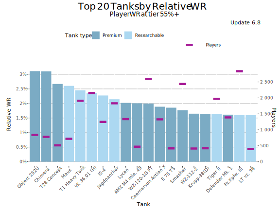
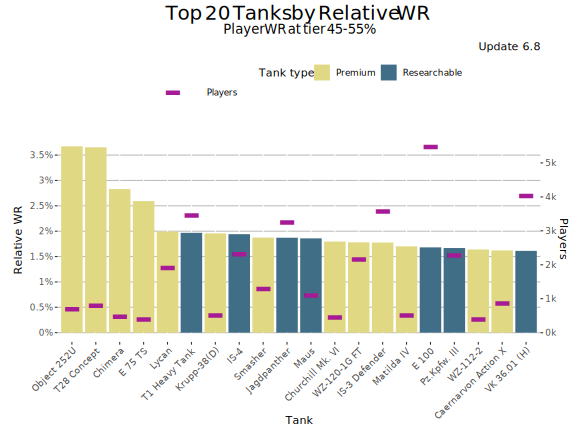
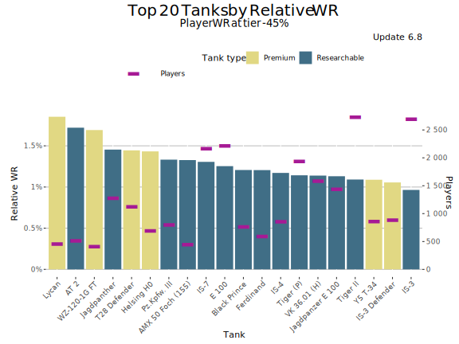
Highest Average WR
This graph shows the tanks with the highest average WR during update 6.8. Player WR denotes the tank’s players' average WR across all the tanks during the update.
- Only battles in maxed-out tanks are taken into account. It is assumed that a tank is maxed out if it is a) premium tank or b) player has more than certain number of battles in it in the end of the update (tier dependent: Tier I: 0 battles, Tier X: 152 battles.
- Since the data is fetched once per update, the stats for just released new Tech-Tree tanks is lower than it should be since the battles players ground the tanks from stock are included in the average.
- On the other hand new high tier tanks are often ground first by more active and also better players that distorts the average WR.
- Only tanks with more than 400 players are listed. This may filter out few upcoming tanks that are being tested.
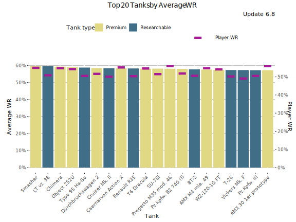
Highest Average WR - Table
Average WR denotes average WR in a tank across all the players during the update. Player WR denotes the tank’s players' average WR across all the tanks during the update.
| Tank | Average WR | Player WR | Players | Battles/Player | Tank type |
|---|---|---|---|---|---|
| Smasher | 59.9% | 55.2% | 4 204 | 136 | Premium |
| LT vz. 38 | 59.8% | 51.1% | 804 | 54 | Researchable |
| Chimera | 59.4% | 54.9% | 1 396 | 110 | Premium |
| Object 252U | 59% | 54.4% | 1 692 | 86 | Premium |
| Type 95 Ha-Go | 58.8% | 50.7% | 454 | 43 | Researchable |
| Cruiser Mk. II | 58.5% | 50.3% | 1 055 | 46 | Researchable |
| Durchbruchswagen 2 | 58.5% | 51.9% | 1 323 | 159 | Premium |
| Caernarvon Action X | 58.5% | 55.4% | 2 397 | 69 | Premium |
| Renault R35 | 58.4% | 50.6% | 695 | 63 | Researchable |
| Pz.Kpfw. B2 740 (f) | 58.3% | 52.1% | 627 | 114 | Premium |
| T6 Dracula | 58.2% | 54.8% | 5 576 | 136 | Premium |
| Progetto M35 mod. 46 | 58.2% | 56.1% | 2 334 | 92 | Premium |
| SU-76I | 58.1% | 51.6% | 462 | 94 | Premium |
| BT-2 | 57.8% | 50.9% | 1 439 | 57 | Researchable |
| AMX M4 mle. 49 | 57.7% | 55% | 921 | 71 | Premium |
| Vickers Mk. F | 57.6% | 49.4% | 1 562 | 46 | Researchable |
| T-26 | 57.5% | 50.5% | 1 092 | 54 | Researchable |
| WZ-120-1G FT | 57.5% | 54.4% | 5 273 | 121 | Premium |
| Pz.Kpfw. III | 57.4% | 50.7% | 7 367 | 78 | Researchable |
| AMX 30 1er prototype | 57.3% | 56.2% | 2 001 | 71 | Premium |
Highest Average Damage (tier-for-tier)
This graph shows the tanks with the highest average damage vs tier average during update 6.8. For the overall highest average damage chart, please see Tier X Average Damage rankings.
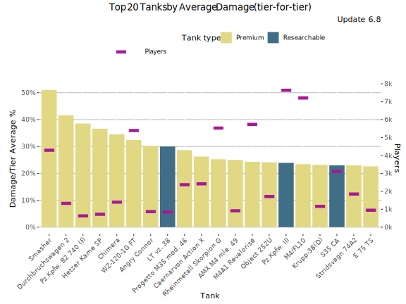
Highest Average Damage (tier-for-tier) - Table
| Tank | Damage/Tier Average % | Average WR | Average Damage | Players | Tier | Vehicle Class | Tank type |
|---|---|---|---|---|---|---|---|
| Smasher | 50.8% | 59.9% | 1 533 | 4 204 | 7 | Heavy Tank | Premium |
| Durchbruchswagen 2 | 41.4% | 59.4% | 577 | 1 323 | 4 | Heavy Tank | Premium |
| Pz.Kpfw. B2 740 (f) | 38.3% | 60% | 564 | 627 | 4 | Heavy Tank | Premium |
| Hetzer Kame SP | 36.3% | 56.4% | 556 | 730 | 4 | Tank Destroyer | Premium |
| Chimera | 34.3% | 59.2% | 1 667 | 1 396 | 8 | Medium Tank | Premium |
| WZ-120-1G FT | 32.4% | 56.8% | 1 644 | 5 273 | 8 | Tank Destroyer | Premium |
| Angry Connor | 30.3% | 53.6% | 746 | 869 | 5 | Tank Destroyer | Premium |
| LT vz. 38 | 30.1% | 61.3% | 412 | 804 | 2 | Light Tank | Researchable |
| Progetto M35 mod. 46 | 28.5% | 58.9% | 1 595 | 2 334 | 8 | Medium Tank | Premium |
| Caernarvon Action X | 26.1% | 58.4% | 1 566 | 2 397 | 8 | Heavy Tank | Premium |
| Rheinmetall Skorpion G | 25.1% | 52.9% | 1 553 | 5 393 | 8 | Tank Destroyer | Premium |
| AMX M4 mle. 49 | 24.8% | 56.3% | 1 550 | 921 | 8 | Heavy Tank | Premium |
| M4A1 Revalorisé | 24.1% | 56.1% | 1 541 | 5 611 | 8 | Medium Tank | Premium |
| Pz.Kpfw. III | 24.1% | 56.3% | 495 | 7 367 | 3 | Medium Tank | Researchable |
| Object 252U | 23.8% | 57.6% | 1 537 | 1 692 | 8 | Heavy Tank | Premium |
| M4/FL10 | 23.1% | 54.4% | 1 252 | 6 961 | 7 | Medium Tank | Premium |
| S35 CA | 22.9% | 52.4% | 704 | 2 928 | 5 | Tank Destroyer | Researchable |
| Krupp-38(D) | 22.9% | 55.4% | 704 | 1 140 | 5 | Medium Tank | Premium |
| E 75 TS | 22.6% | 56.2% | 1 522 | 944 | 8 | Heavy Tank | Premium |
| Lupus | 22.3% | 56.1% | 1 244 | 484 | 7 | Heavy Tank | Premium |
Highest Average Kills/Battle
This graph shows the tanks with the most kills per battle on average WR during update 6.8. Player WR denotes the tank’s players' average WR across all the tanks during the update.
- Only battles in maxed-out tanks are taken into account. It is assumed that a tank is maxed out if it is a) premium tank or b) player has more than certain number of battles in it in the end of the update (tier dependent: Tier I: 0 battles, Tier X: 152 battles.
- Since the data is fetched once per update, the stats for just released new Tech-Tree tanks is lower than it should be since the battles players ground the tanks from stock are included in the average.
- On the other hand new high tier tanks are often ground first by more active and also better players that distorts the stats for those.
- Only tanks with more than 400 players are listed. This may filter out few upcoming tanks that are being tested.
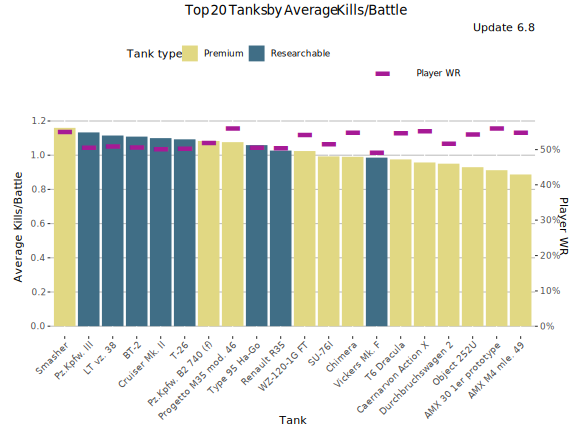
Highest Average Kills/Battle - Table
Average WR denotes average WR in a tank across all the players during the update. Player WR denotes the tank’s players' average WR across all the tanks during the update.
| Tank | Average Kills/Battle | Average WR | Player WR | Players | Battles/Player | Tank type |
|---|---|---|---|---|---|---|
| Smasher | 1.16 | 59.9% | 55.2% | 4 204 | 136 | Premium |
| LT vz. 38 | 1.12 | 59.8% | 51.1% | 804 | 54 | Researchable |
| Chimera | 0.99 | 59.4% | 54.9% | 1 396 | 110 | Premium |
| Object 252U | 0.93 | 59% | 54.4% | 1 692 | 86 | Premium |
| Type 95 Ha-Go | 1.06 | 58.8% | 50.7% | 454 | 43 | Researchable |
| Cruiser Mk. II | 1.10 | 58.5% | 50.3% | 1 055 | 46 | Researchable |
| Durchbruchswagen 2 | 0.95 | 58.5% | 51.9% | 1 323 | 159 | Premium |
| Caernarvon Action X | 0.96 | 58.5% | 55.4% | 2 397 | 69 | Premium |
| Renault R35 | 1.03 | 58.4% | 50.6% | 695 | 63 | Researchable |
| Pz.Kpfw. B2 740 (f) | 1.08 | 58.3% | 52.1% | 627 | 114 | Premium |
| T6 Dracula | 0.98 | 58.2% | 54.8% | 5 576 | 136 | Premium |
| Progetto M35 mod. 46 | 1.08 | 58.2% | 56.1% | 2 334 | 92 | Premium |
| SU-76I | 0.99 | 58.1% | 51.6% | 462 | 94 | Premium |
| BT-2 | 1.12 | 57.8% | 50.9% | 1 439 | 57 | Researchable |
| AMX M4 mle. 49 | 0.89 | 57.7% | 55% | 921 | 71 | Premium |
| Vickers Mk. F | 1.00 | 57.6% | 49.4% | 1 562 | 46 | Researchable |
| T-26 | 1.11 | 57.5% | 50.5% | 1 092 | 54 | Researchable |
| WZ-120-1G FT | 1.03 | 57.5% | 54.4% | 5 273 | 121 | Premium |
| Pz.Kpfw. III | 1.14 | 57.4% | 50.7% | 7 367 | 78 | Researchable |
| AMX 30 1er prototype | 0.91 | 57.3% | 56.2% | 2 001 | 71 | Premium |
Highest Spot Rate
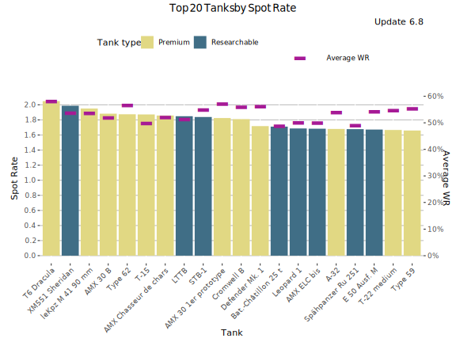
Highest Spot Rate - Table
| Tank | Spot Rate | Average WR | Player WR | Players | Battles/Player | Tank type |
|---|---|---|---|---|---|---|
| T6 Dracula | 2.05 | 58.2% | 54.8% | 5 576 | 136 | Premium |
| XM551 Sheridan | 1.99 | 53.8% | 56.9% | 6 951 | 185 | Researchable |
| leKpz M 41 90 mm | 1.95 | 53.8% | 55.6% | 1 502 | 79 | Premium |
| AMX 30 B | 1.89 | 52.1% | 54.8% | 2 717 | 73 | Premium |
| Type 62 | 1.88 | 56.7% | 54.5% | 6 459 | 95 | Premium |
| T-15 | 1.87 | 50% | 49.4% | 415 | 85 | Premium |
| AMX Chasseur de chars | 1.86 | 52.2% | 53.3% | 6 975 | 114 | Premium |
| LTTB | 1.85 | 51.5% | 50.7% | 8 482 | 133 | Researchable |
| STB-1 | 1.84 | 55% | 56.6% | 3 122 | 117 | Researchable |
| AMX 30 1er prototype | 1.83 | 57.3% | 56.2% | 2 001 | 71 | Premium |
| Cromwell B | 1.81 | 56.1% | 52.6% | 4 982 | 85 | Premium |
| Defender Mk. 1 | 1.72 | 56.3% | 54.2% | 2 844 | 85 | Premium |
| Bat.-Châtillon 25 t | 1.71 | 48.9% | 53% | 5 528 | 111 | Researchable |
| AMX ELC bis | 1.69 | 50.1% | 49.4% | 4 074 | 78 | Researchable |
| Leopard 1 | 1.69 | 50.2% | 53.5% | 6 667 | 125 | Researchable |
| A-32 | 1.69 | 54% | 50.3% | 922 | 72 | Premium |
| Spähpanzer Ru 251 | 1.68 | 49.3% | 50.9% | 5 379 | 135 | Researchable |
| E 50 Ausf. M | 1.67 | 54.3% | 55.5% | 5 209 | 117 | Researchable |
| T-22 medium | 1.67 | 54.8% | 56% | 2 880 | 75 | Premium |
| Type 59 | 1.66 | 55.4% | 55% | 4 484 | 115 | Premium |
Highest Hit Rate
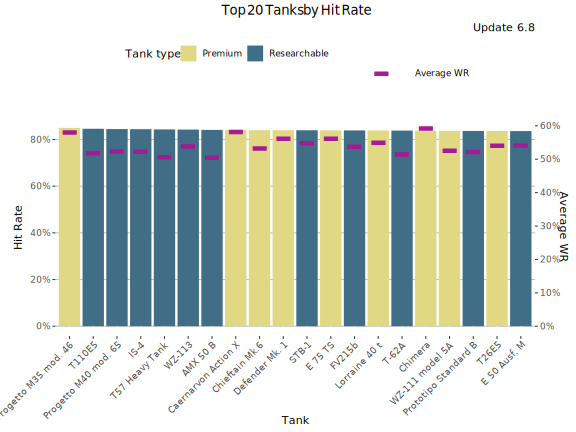
Highest Hit Rate - Table
| Tank | Hit Rate | Average WR | Player WR | Players | Battles/Player | Tank type |
|---|---|---|---|---|---|---|
| Progetto M35 mod. 46 | 85% | 58.2% | 56.1% | 2 334 | 92 | Premium |
| T110E5 | 84.6% | 52% | 53.2% | 3 293 | 130 | Researchable |
| Progetto M40 mod. 65 | 84.5% | 52.5% | 53.7% | 5 083 | 125 | Researchable |
| IS-4 | 84.5% | 52.5% | 52.2% | 4 992 | 120 | Researchable |
| T57 Heavy Tank | 84.3% | 50.8% | 52% | 9 940 | 108 | Researchable |
| WZ-113 | 84.3% | 54.1% | 55.9% | 1 283 | 87 | Researchable |
| Caernarvon Action X | 84.1% | 58.5% | 55.4% | 2 397 | 69 | Premium |
| AMX 50 B | 84.1% | 50.6% | 51.5% | 6 693 | 113 | Researchable |
| Chieftain Mk.6 | 84% | 53.4% | 55.4% | 5 585 | 81 | Premium |
| Defender Mk. 1 | 84% | 56.3% | 54.2% | 2 844 | 85 | Premium |
| E 75 TS | 84% | 56.4% | 53.5% | 944 | 56 | Premium |
| STB-1 | 84% | 55% | 56.6% | 3 122 | 117 | Researchable |
| FV215b | 83.9% | 53.9% | 55.7% | 2 529 | 112 | Researchable |
| Lorraine 40 t | 83.9% | 55.2% | 54.9% | 890 | 74 | Premium |
| T-62A | 83.8% | 51.7% | 53.6% | 9 744 | 138 | Researchable |
| Chimera | 83.8% | 59.4% | 54.9% | 1 396 | 110 | Premium |
| WZ-111 model 5A | 83.7% | 52.7% | 55.2% | 418 | 61 | Premium |
| Prototipo Standard B | 83.7% | 52.4% | 51.5% | 7 265 | 141 | Researchable |
| T26E5 | 83.7% | 54.1% | 52.8% | 531 | 60 | Premium |
| E 50 Ausf. M | 83.6% | 54.3% | 55.5% | 5 209 | 117 | Researchable |
Most Popular Tanks
This graph shows the most popular tanks by the number of players during the update 6.8.
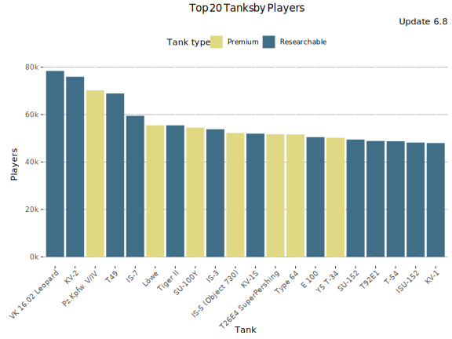
Most popular Tanks - Table
| Tank | Players | Average WR | Battles/Player | Tank type |
|---|---|---|---|---|
| VK 16.02 Leopard | 78 408 | 51.4% | 58 | Researchable |
| KV-2 | 75 957 | 50.6% | 55 | Researchable |
| Pz.Kpfw. V/IV | 70 247 | 55.6% | 22 | Premium |
| T49 | 68 902 | 50.4% | 59 | Researchable |
| IS-7 | 59 484 | 51.4% | 39 | Researchable |
| Löwe | 55 491 | 53% | 42 | Premium |
| Tiger II | 55 472 | 52.1% | 43 | Researchable |
| SU-100Y | 54 537 | 54% | 41 | Premium |
| IS-3 | 53 826 | 51.1% | 51 | Researchable |
| IS-5 (Object 730) | 52 261 | 55.5% | 28 | Premium |
| KV-1S | 51 973 | 51.4% | 56 | Researchable |
| T26E4 SuperPershing | 51 733 | 52.4% | 38 | Premium |
| Type 64 | 51 647 | 52.6% | 25 | Premium |
| E 100 | 50 498 | 51.9% | 43 | Researchable |
| Y5 T-34 | 50 244 | 58.5% | 18 | Premium |
| SU-152 | 49 487 | 51.3% | 61 | Researchable |
| T92E1 | 48 877 | 52.5% | 80 | Researchable |
| T-54 | 48 755 | 51.8% | 57 | Researchable |
| ISU-152 | 48 207 | 49.7% | 56 | Researchable |
| KV-1 | 48 002 | 50.1% | 50 | Researchable |
Most played tanks
This graph shows the most played tanks by number of battles during the update 6.8.
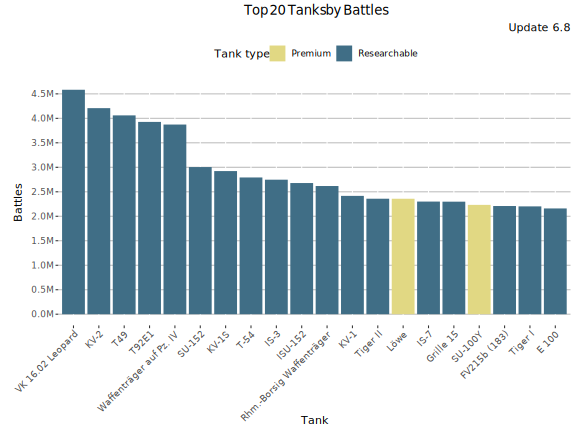
Most Played Tanks - Table
| Tank | Battles | Average WR | Players | Battles/Player | Tank type |
|---|---|---|---|---|---|
| VK 16.02 Leopard | 4.6M | 51.4% | 78 408 | 58 | Researchable |
| KV-2 | 4.2M | 50.6% | 75 957 | 55 | Researchable |
| T49 | 4.1M | 50.4% | 68 902 | 59 | Researchable |
| T92E1 | 3.9M | 52.5% | 48 877 | 80 | Researchable |
| Waffenträger auf Pz. IV | 3.9M | 51.5% | 43 156 | 90 | Researchable |
| SU-152 | 3.0M | 51.3% | 49 487 | 61 | Researchable |
| KV-1S | 2.9M | 51.4% | 51 973 | 56 | Researchable |
| T-54 | 2.8M | 51.8% | 48 755 | 57 | Researchable |
| IS-3 | 2.7M | 51.1% | 53 826 | 51 | Researchable |
| ISU-152 | 2.7M | 49.7% | 48 207 | 56 | Researchable |
| Rhm.-Borsig Waffenträger | 2.6M | 50.8% | 42 293 | 62 | Researchable |
| KV-1 | 2.4M | 50.1% | 48 002 | 50 | Researchable |
| Tiger II | 2.4M | 52.1% | 55 472 | 43 | Researchable |
| Löwe | 2.4M | 53% | 55 491 | 42 | Premium |
| IS-7 | 2.3M | 51.4% | 59 484 | 39 | Researchable |
| Grille 15 | 2.3M | 49% | 46 057 | 50 | Researchable |
| SU-100Y | 2.2M | 54% | 54 537 | 41 | Premium |
| FV215b (183) | 2.2M | 48.6% | 38 730 | 57 | Researchable |
| Tiger I | 2.2M | 52.3% | 46 627 | 47 | Researchable |
| E 100 | 2.2M | 51.9% | 50 498 | 43 | Researchable |
Lowest Performing Tanks
Lowest Relative WR
The graph shows the tanks with the lowest Relative WR. That is the average of players' WR in a tank compared to their average WR at the tier (in all same tier tanks). Relative WR is a measure of the performance/strength of the tank.
- All the statistics are about battles fought during the update 6.8 only.
- The impact of “Stock-grind battles” is reduced based on tier-specific requirement for total battles at the end of the update. Only players with more than 0-152 (depending on the tier) battles in a tank in the end of the update are included to eliminate the impact of the first battles in the tank (with sub-100% crew / modules).
- The players need to have 10-20 battles in a tank and 20-40 battles at the tier during the update.
- Average WR is the players’s average WR in the tank
- Player WR at Tier is the average WR of the players of the tank at the tier. Since different tiers have different difficulty, it is more meaningful to compare players' performance in the same tier tanks.
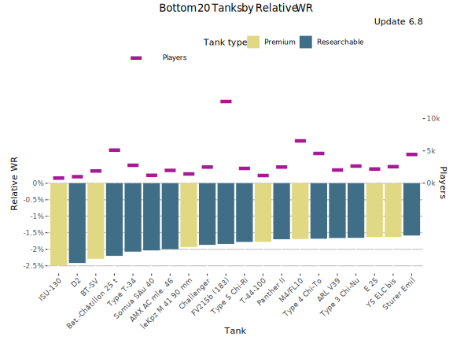
Lowest Relative WR - Table
| Tank | Relative WR | Average WR | Player WR at Tier | Players | Battles/Player | Tank type |
|---|---|---|---|---|---|---|
| ISU-130 | -2.46% | 49.5% | 52% | 859 | 68 | Premium |
| D2 | -2.39% | 48.4% | 50.8% | 1 041 | 43 | Researchable |
| BT-SV | -2.28% | 46.6% | 48.9% | 1 857 | 58 | Premium |
| Bat.-Châtillon 25 t | -2.2% | 49.2% | 51.4% | 5 152 | 111 | Researchable |
| Somua SAu 40 | -2.08% | 48.4% | 50.4% | 1 244 | 35 | Researchable |
| Type T-34 | -2.04% | 48.3% | 50.3% | 2 620 | 61 | Researchable |
| AMX AC mle. 46 | -1.99% | 47% | 49% | 1 992 | 80 | Researchable |
| leKpz M 41 90 mm | -1.91% | 53.9% | 55.8% | 1 471 | 80 | Premium |
| Challenger | -1.85% | 47.9% | 49.7% | 2 480 | 73 | Researchable |
| FV215b (183) | -1.84% | 48.9% | 50.7% | 12 654 | 142 | Researchable |
| T-44-100 | -1.81% | 51.5% | 53.3% | 1 237 | 111 | Premium |
| Type 5 Chi-Ri | -1.8% | 48.5% | 50.3% | 2 242 | 108 | Researchable |
| Panther II | -1.72% | 46.9% | 48.7% | 2 419 | 103 | Researchable |
| ARL V39 | -1.71% | 48.8% | 50.5% | 1 991 | 63 | Researchable |
| M4/FL10 | -1.7% | 54.4% | 56.1% | 6 393 | 51 | Premium |
| Y5 ELC bis | -1.68% | 48.7% | 50.3% | 2 541 | 81 | Premium |
| Type 4 Chi-To | -1.68% | 51.8% | 53.5% | 4 515 | 67 | Researchable |
| E 25 | -1.65% | 50.3% | 51.9% | 2 206 | 113 | Premium |
| Type 3 Chi-Nu | -1.61% | 49.8% | 51.4% | 2 566 | 57 | Researchable |
| Sturer Emil | -1.59% | 46.9% | 48.5% | 4 199 | 97 | Researchable |
Lowest Average WR
This graph shows the tanks with the lowest average WR during update 6.8. Player WR denotes the tank’s players' average WR across all the tanks during the update. Only tanks with more than 400 players are listed. This may filter out few upcoming tanks that are being tested.
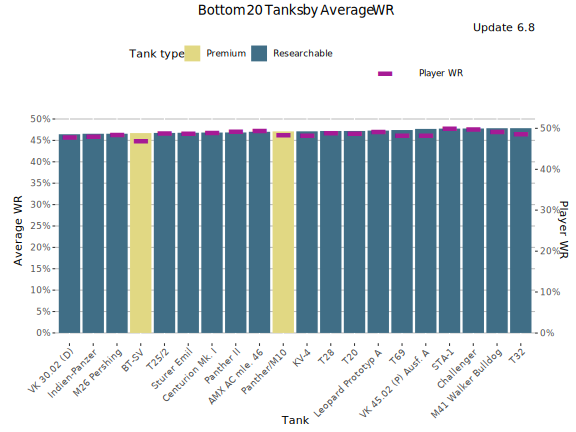
Lowest Average WR - Table
Average WR denotes average WR in a tank across all the players during the update. Player WR denotes the tank’s players' average WR across all the tanks during the update.
| Tank | Average WR | Player WR | Players | Battles/Player | Tank type |
|---|---|---|---|---|---|
| M26 Pershing | 46.5% | 48.5% | 1 689 | 112 | Researchable |
| VK 30.02 (D) | 46.5% | 48% | 896 | 94 | Researchable |
| Indien-Panzer | 46.6% | 48.1% | 1 465 | 115 | Researchable |
| BT-SV | 46.8% | 47% | 2 353 | 51 | Premium |
| Panther II | 46.8% | 49.3% | 2 580 | 103 | Researchable |
| T25/2 | 46.8% | 48.9% | 2 638 | 92 | Researchable |
| Sturer Emil | 46.8% | 48.9% | 4 472 | 95 | Researchable |
| Centurion Mk. I | 46.9% | 49.1% | 2 011 | 111 | Researchable |
| AMX AC mle. 46 | 47% | 49.5% | 2 104 | 80 | Researchable |
| T28 | 47.1% | 48.9% | 971 | 99 | Researchable |
| Panther/M10 | 47.2% | 48.5% | 1 178 | 122 | Premium |
| T20 | 47.2% | 48.8% | 1 710 | 103 | Researchable |
| KV-4 | 47.2% | 48.4% | 3 372 | 118 | Researchable |
| Leopard Prototyp A | 47.3% | 49.3% | 4 013 | 143 | Researchable |
| T69 | 47.5% | 48.3% | 1 939 | 105 | Researchable |
| STA-1 | 47.7% | 50% | 1 837 | 113 | Researchable |
| VK 45.02 (P) Ausf. A | 47.8% | 48.4% | 2 157 | 101 | Researchable |
| Challenger | 47.8% | 49.9% | 2 660 | 71 | Researchable |
| M41 Walker Bulldog | 47.9% | 49.3% | 11 952 | 99 | Researchable |
| T32 | 47.9% | 48.8% | 2 218 | 113 | Researchable |
Lowest Average Damage (tier-for-tier)
This graph shows the tanks with the lowest average damage vs tier average during update 6.8.
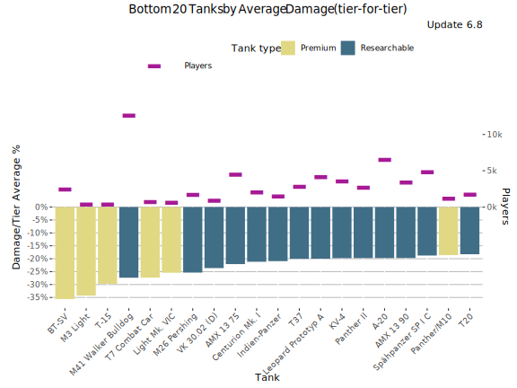
Lowest Average Damage (tier-for-tier) - Table
| Tank | Damage/Tier Average % | Average WR | Average Damage | Players | Tier | Vehicle Class | Tank type |
|---|---|---|---|---|---|---|---|
| BT-SV | -35.4% | 46.3% | 257 | 2 353 | 3 | Light Tank | Premium |
| M3 Light | -34.4% | 49.1% | 262 | 401 | 3 | Light Tank | Premium |
| T-15 | -29.7% | 50.2% | 280 | 415 | 3 | Light Tank | Premium |
| M41 Walker Bulldog | -27.5% | 47.5% | 737 | 11 952 | 7 | Light Tank | Researchable |
| T7 Combat Car | -27.2% | 51.7% | 230 | 725 | 2 | Light Tank | Premium |
| M26 Pershing | -25.6% | 46.3% | 923 | 1 689 | 8 | Medium Tank | Researchable |
| Light Mk. VIC | -25.4% | 49.7% | 236 | 653 | 2 | Light Tank | Premium |
| VK 30.02 (D) | -23.6% | 46.5% | 777 | 896 | 7 | Medium Tank | Researchable |
| AMX 13 75 | -22.4% | 48.1% | 789 | 4 127 | 7 | Light Tank | Researchable |
| Indien-Panzer | -21.1% | 46.2% | 979 | 1 465 | 8 | Medium Tank | Researchable |
| Centurion Mk. I | -21% | 46.5% | 981 | 2 011 | 8 | Medium Tank | Researchable |
| Panther II | -20.1% | 46.6% | 992 | 2 580 | 8 | Medium Tank | Researchable |
| Leopard Prototyp A | -20.1% | 47.4% | 1 186 | 4 013 | 9 | Medium Tank | Researchable |
| T37 | -20% | 48.3% | 658 | 2 685 | 6 | Light Tank | Researchable |
| AMX 13 90 | -20% | 48.6% | 993 | 3 254 | 8 | Light Tank | Researchable |
| A-20 | -20% | 50.2% | 326 | 6 368 | 4 | Light Tank | Researchable |
| KV-4 | -19.6% | 47.3% | 998 | 3 372 | 8 | Heavy Tank | Researchable |
| Panther/M10 | -18.7% | 48.5% | 826 | 1 178 | 7 | Medium Tank | Premium |
| Spähpanzer SP I C | -18.7% | 48.6% | 827 | 4 577 | 7 | Light Tank | Researchable |
| T20 | -18.5% | 46.8% | 829 | 1 710 | 7 | Medium Tank | Researchable |
Lowest Average Kills/Battle
This graph shows the tanks with the most kills per battle on average WR during update 6.8. Player WR denotes the tank’s players' average WR across all the tanks during the update.
- Only battles in maxed-out tanks are taken into account. It is assumed that a tank is maxed out if it is a) premium tank or b) player has more than certain number of battles in it in the end of the update (tier dependent: Tier I: 0 battles, Tier X: 152 battles.
- Since the data is fetched once per update, the stats for just released new Tech-Tree tanks is lower than it should be since the battles players ground the tanks from stock are included in the average.
- On the other hand new high tier tanks are often ground first by more active and also better players that distorts the stats for those.
- Only tanks with more than 400 players are listed. This may filter out few upcoming tanks that are being tested.
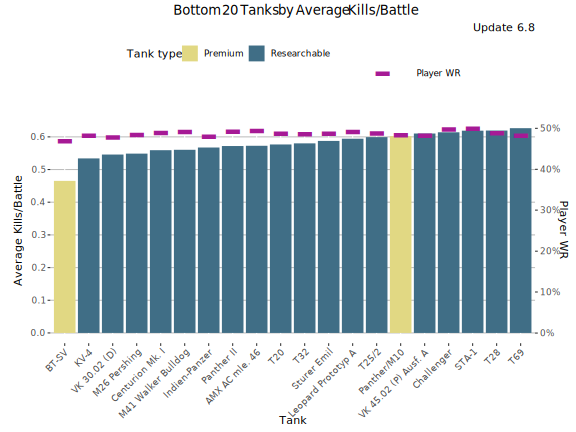
Lowest Average Kills/Battle - Table
Average WR denotes average WR in a tank across all the players during the update. Player WR denotes the tank’s players' average WR across all the tanks during the update.
| Tank | Average Kills/Battle | Average WR | Player WR | Players | Battles/Player | Tank type |
|---|---|---|---|---|---|---|
| M26 Pershing | 0.55 | 46.5% | 48.5% | 1 689 | 112 | Researchable |
| VK 30.02 (D) | 0.55 | 46.5% | 48% | 896 | 94 | Researchable |
| Indien-Panzer | 0.57 | 46.6% | 48.1% | 1 465 | 115 | Researchable |
| BT-SV | 0.47 | 46.8% | 47% | 2 353 | 51 | Premium |
| Panther II | 0.57 | 46.8% | 49.3% | 2 580 | 103 | Researchable |
| T25/2 | 0.60 | 46.8% | 48.9% | 2 638 | 92 | Researchable |
| Sturer Emil | 0.59 | 46.8% | 48.9% | 4 472 | 95 | Researchable |
| Centurion Mk. I | 0.56 | 46.9% | 49.1% | 2 011 | 111 | Researchable |
| AMX AC mle. 46 | 0.57 | 47% | 49.5% | 2 104 | 80 | Researchable |
| T28 | 0.62 | 47.1% | 48.9% | 971 | 99 | Researchable |
| Panther/M10 | 0.60 | 47.2% | 48.5% | 1 178 | 122 | Premium |
| T20 | 0.58 | 47.2% | 48.8% | 1 710 | 103 | Researchable |
| KV-4 | 0.54 | 47.2% | 48.4% | 3 372 | 118 | Researchable |
| Leopard Prototyp A | 0.59 | 47.3% | 49.3% | 4 013 | 143 | Researchable |
| T69 | 0.63 | 47.5% | 48.3% | 1 939 | 105 | Researchable |
| STA-1 | 0.62 | 47.7% | 50% | 1 837 | 113 | Researchable |
| VK 45.02 (P) Ausf. A | 0.61 | 47.8% | 48.4% | 2 157 | 101 | Researchable |
| Challenger | 0.61 | 47.8% | 49.9% | 2 660 | 71 | Researchable |
| M41 Walker Bulldog | 0.56 | 47.9% | 49.3% | 11 952 | 99 | Researchable |
| T32 | 0.58 | 47.9% | 48.8% | 2 218 | 113 | Researchable |
Lowest Spot Rate
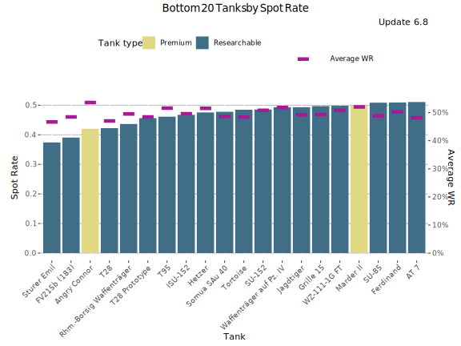
Lowest Spot Rate - Table
| Tank | Spot Rate | Average WR | Player WR | Players | Battles/Player | Tank type |
|---|---|---|---|---|---|---|
| Sturer Emil | 0.37 | 46.8% | 48.9% | 4 472 | 95 | Researchable |
| FV215b (183) | 0.39 | 48.6% | 52.6% | 13 675 | 138 | Researchable |
| Angry Connor | 0.42 | 53.7% | 52% | 869 | 95 | Premium |
| T28 | 0.42 | 47.1% | 48.9% | 971 | 99 | Researchable |
| Rhm.-Borsig Waffenträger | 0.44 | 49.7% | 50.9% | 14 010 | 143 | Researchable |
| T28 Prototype | 0.46 | 48.6% | 49.5% | 2 707 | 113 | Researchable |
| T95 | 0.46 | 51.7% | 50.4% | 1 283 | 185 | Researchable |
| ISU-152 | 0.47 | 49.8% | 50.5% | 13 438 | 141 | Researchable |
| Hetzer | 0.47 | 51.7% | 49.3% | 5 984 | 79 | Researchable |
| Somua SAu 40 | 0.48 | 48.7% | 49% | 1 659 | 32 | Researchable |
| Tortoise | 0.48 | 48.6% | 48.9% | 1 846 | 153 | Researchable |
| SU-152 | 0.49 | 51% | 50.8% | 14 417 | 145 | Researchable |
| Waffenträger auf Pz. IV | 0.49 | 52% | 51.8% | 18 325 | 175 | Researchable |
| Jagdtiger | 0.49 | 49.4% | 49.6% | 3 716 | 139 | Researchable |
| Grille 15 | 0.50 | 49.5% | 52.7% | 14 241 | 128 | Researchable |
| Marder II | 0.50 | 52.3% | 49.6% | 487 | 181 | Premium |
| WZ-111-1G FT | 0.50 | 51% | 50.7% | 1 883 | 89 | Researchable |
| SU-85 | 0.51 | 49% | 48.8% | 5 482 | 78 | Researchable |
| Ferdinand | 0.51 | 50.5% | 49.3% | 2 370 | 121 | Researchable |
| AT 7 | 0.51 | 48.3% | 48.6% | 1 532 | 81 | Researchable |
Lowest Hit Rate
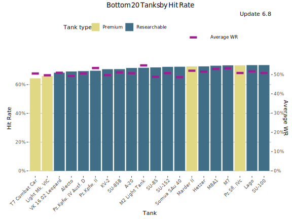
Lowest Hit Rate - Table
| Tank | Hit Rate | Average WR | Player WR | Players | Battles/Player | Tank type |
|---|---|---|---|---|---|---|
| T7 Combat Car | 64.4% | 50.7% | 49.2% | 725 | 130 | Premium |
| Light Mk. VIC | 66.1% | 49.9% | 48.7% | 653 | 59 | Premium |
| VK 16.02 Leopard | 68.3% | 51.2% | 49.4% | 18 554 | 139 | Researchable |
| Alecto | 69.2% | 49.4% | 48.8% | 2 963 | 45 | Researchable |
| Pz.Kpfw. IV Ausf. D | 69.3% | 50.8% | 49.3% | 8 213 | 69 | Researchable |
| Pz.Kpfw. II | 69.8% | 53.6% | 49.1% | 1 684 | 75 | Researchable |
| SU-85B | 70.7% | 51.3% | 49.1% | 3 637 | 52 | Researchable |
| KV-2 | 70.8% | 49.9% | 49.9% | 16 629 | 175 | Researchable |
| A-20 | 71.6% | 50.9% | 49.1% | 6 368 | 62 | Researchable |
| M2 Light Tank | 71.8% | 55.1% | 49.1% | 1 046 | 48 | Researchable |
| SU-85 | 71.9% | 49% | 48.8% | 5 482 | 78 | Researchable |
| Somua SAu 40 | 72.4% | 48.7% | 49% | 1 659 | 32 | Researchable |
| SU-152 | 72.4% | 51% | 50.8% | 14 417 | 145 | Researchable |
| Hetzer | 72.7% | 51.7% | 49.3% | 5 984 | 79 | Researchable |
| Marder II | 72.8% | 52.3% | 49.6% | 487 | 181 | Premium |
| M8A1 | 73.1% | 53.1% | 49.5% | 4 242 | 56 | Researchable |
| M7 | 73.4% | 53.5% | 49.4% | 7 230 | 58 | Researchable |
| Pz.Sfl. IVc | 73.5% | 51.2% | 50% | 437 | 114 | Premium |
| Lago | 73.6% | 51.9% | 49.4% | 4 450 | 38 | Researchable |
| SU-100 | 73.6% | 51.1% | 49.5% | 8 360 | 114 | Researchable |
Least Popular Tanks
This graph shows the least popular tanks by the number of players during the update 6.8. The graph includes also unreleased tanks in super-testing.
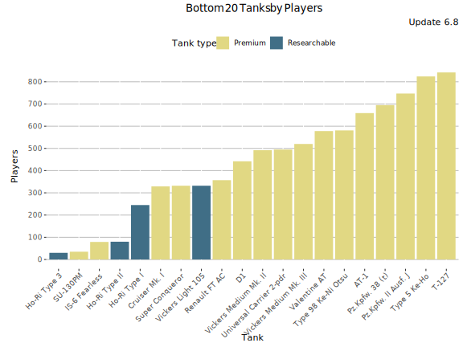
Least Played Tanks - Table
| Tank | Players | Average WR | Battles/Player | Tank type |
|---|---|---|---|---|
| Ho-Ri Type 3 | 30 | 66.6% | 6 | Researchable |
| SU-130PM | 35 | 64.6% | 27 | Premium |
| IS-6 Fearless | 79 | 71.5% | 14 | Premium |
| Ho-Ri Type II | 80 | 61.3% | 16 | Researchable |
| Ho-Ri Type I | 245 | 58.4% | 13 | Researchable |
| Cruiser Mk. I | 329 | 53.7% | 7 | Premium |
| Super Conqueror | 332 | 64.4% | 62 | Premium |
| Vickers Light 105 | 332 | 60.5% | 49 | Researchable |
| Renault FT AC | 357 | 51.5% | 8 | Premium |
| D1 | 442 | 53.1% | 9 | Premium |
| Vickers Medium Mk. II | 492 | 51.4% | 20 | Premium |
| Universal Carrier 2-pdr | 495 | 52.7% | 27 | Premium |
| Vickers Medium Mk. III | 520 | 50% | 18 | Premium |
| Valentine AT | 578 | 56.9% | 16 | Premium |
| Type 98 Ke-Ni Otsu | 581 | 66% | 42 | Premium |
| AT-1 | 659 | 52.2% | 16 | Premium |
| Pz.Kpfw. 38 (t) | 695 | 51.9% | 25 | Premium |
| Pz.Kpfw. II Ausf. J | 747 | 56.2% | 10 | Premium |
| Type 5 Ke-Ho | 824 | 60% | 21 | Premium |
| T-127 | 842 | 54.9% | 8 | Premium |
Least played tanks
This graph shows the most played tanks by number of battles during the update 6.8.
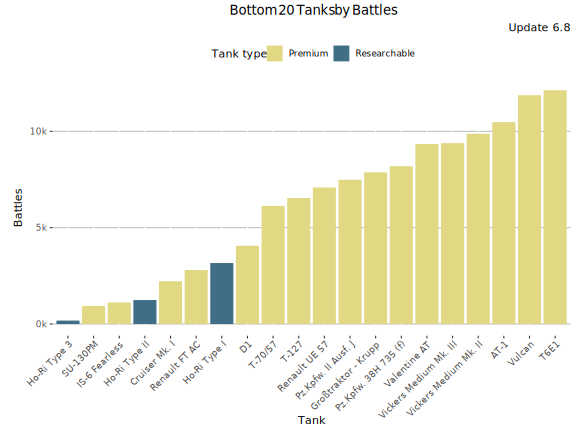
Least Played Tanks - Table
| Tank | Battles | Average WR | Players | Battles/Player | Tank type |
|---|---|---|---|---|---|
| Ho-Ri Type 3 | 179 | 66.6% | 30 | 6 | Researchable |
| SU-130PM | 940 | 64.6% | 35 | 27 | Premium |
| IS-6 Fearless | 1 118 | 71.5% | 79 | 14 | Premium |
| Ho-Ri Type II | 1 244 | 61.3% | 80 | 16 | Researchable |
| Cruiser Mk. I | 2 221 | 53.7% | 329 | 7 | Premium |
| Renault FT AC | 2 804 | 51.5% | 357 | 8 | Premium |
| Ho-Ri Type I | 3 165 | 58.4% | 245 | 13 | Researchable |
| D1 | 4 061 | 53.1% | 442 | 9 | Premium |
| T-70/57 | 6 131 | 52% | 1 194 | 5 | Premium |
| T-127 | 6 538 | 54.9% | 842 | 8 | Premium |
| Renault UE 57 | 7 088 | 54.8% | 1 126 | 6 | Premium |
| Pz.Kpfw. II Ausf. J | 7 485 | 56.2% | 747 | 10 | Premium |
| Großtraktor - Krupp | 7 872 | 60.6% | 1 137 | 7 | Premium |
| Pz.Kpfw. 38H 735 (f) | 8 188 | 56.8% | 1 491 | 5 | Premium |
| Valentine AT | 9 342 | 56.9% | 578 | 16 | Premium |
| Vickers Medium Mk. III | 9 385 | 50% | 520 | 18 | Premium |
| Vickers Medium Mk. II | 9 873 | 51.4% | 492 | 20 | Premium |
| AT-1 | 10 476 | 52.2% | 659 | 16 | Premium |
| Vulcan | 11 872 | 53.7% | 1 719 | 7 | Premium |
| T6E1 | 12 132 | 60.1% | 1 531 | 8 | Premium |
-

This work is licensed under a Creative Commons Attribution-ShareAlike 4.0 International License.
-

-

Blitzanalysiz() is a player-created website for World of Tanks: Blitz and developed in accordance with WG DPP. This site is not an official Wargaming or World of Tanks: Blitz website. World of Tanks Blitz and Wargaming are trademarks of Wargaming.net Limited. Game content and materials copyright © Wargaming.net. All rights reserved.